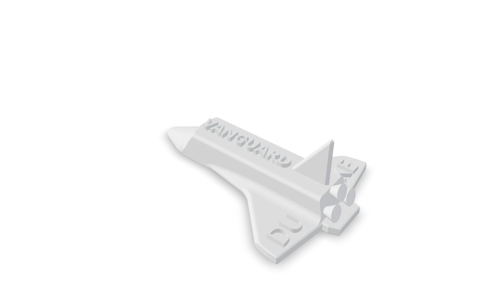

Class projects · side work
Smaller work
Class projects that didn't need a full page each, plus one I went way overboard on.
Simulating the ISS deorbit
EGR 105 · Fall 2024 · Team projectA team project for EGR 105, Computing for Engineers: simulate the International Space Station deorbiting. I wrote the orbital decay script. It treats the station as a point mass under Earth's gravity and aerodynamic drag, takes air density from the 1976 U.S. Standard Atmosphere, and steps the orbit forward with a fourth-order Runge-Kutta integrator I wrote by hand in Python. The project reported the station's altitude at each critical threshold and animated the whole descent.
Checking a snap-fit with FEA
ME 321 · Fall 2026A 3D-printed snap-fit grip that holds a 38 mm cube, for an ME 321 lab. My part here was the check, not the sizing. I ran a SolidWorks static study with the tab pushed 1.5 mm, a margin over the real 1.2 mm, which put the peak strain at 6.3 × 10⁻³ and the minimum factor of safety near 2.9, both at the inner arm-to-wall corner. That corner is sharp, so part of that peak is a stress singularity, and I wouldn't trust the exact number until it's filleted and the mesh converges. Then I printed and tested it: the cube snaps in, holds, and slides back out with a firm pull.


Space Shuttle Vanguard
EGR 101 · Fall 2024A CAD assignment for EGR 101, my first semester at Duke, where I went well past what was asked just for fun: a 4.9-inch Space Shuttle with DUKE and VANGUARD lettering and three engine bells, modeled in Onshape to print in PLA, plus a fully dimensioned drawing.

Interactive 3D · 407 KB